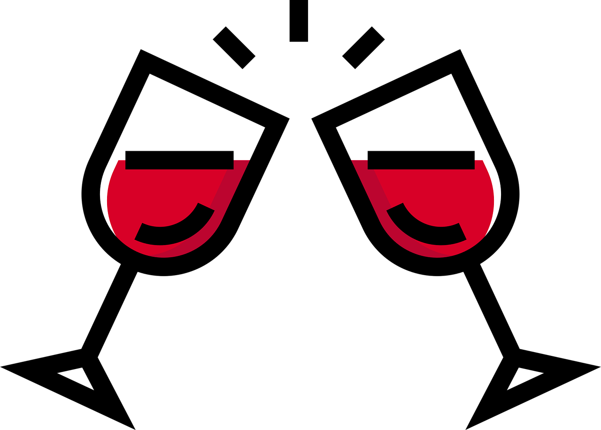

Testing React Components
Monika Glier
enzyme
jest
- assertions
- toBe() ('==='; strings, booleans, numbers)
- toEqual() (deep value comparison)
- toThrow()
- toMatchSnapshot()
jest
- mocks
- component.myFunction = jest.fn()
- component.myFunction.mockReturnValueOnce(true)
- component.myFunction.mockReturnValue(true)
- component.myFunction.mock.calls
jest
- spies
- const spy = jest.spyOn(someObject, 'function')
- expect(spy).toHaveBeenCalled()
- expect(spy).toHaveBeenCalledWith(args)
enzyme
- shallow
- mount
- render
- simulate
- click
- change
Components' lifecycle methods
- constructor()
- render()
- componentWillMount()
- componentDidMount()
- componentWillUnmount()
- componentWillReceiveProps()
- shouldComponentUpdate()
- componentWillUpdate()
- componentDidUpdate()
- componentDidCatch()
Components' state & props
class TopSong extends Component {
constructor(props) {
super(props)
this.state = {
color: titleToRGB(props.song.title),
detailsOpen: false,
}
}
toggleDetails() {
const { detailsOpen } = this.state
this.setState({ detailsOpen: !detailsOpen })
}
}
Components' render()
render() {
const { id, song } = this.props
return (
<section>
<h3>{song.title}</h3>
<ToggleButton
detailsOpen={this.state.detailsOpen}
handleClick={() => this.toggleDetails()}
/>
{this.state.detailsOpen
&& <Details id={id} song={song} />}
</section>
)
}
What tests do you need?
1. Snapshot tests
import toJson from 'enzyme-to-json'
...
it('matches snapshot (shallow)', () => {
const props = { song: { title: 'We rock!' } }
const wrapper = shallow(<TopSong {...props}/>>
expect(toJson(wrapper)).toMatchSnapshot()
})
<section>
<header>
We rock!
</header>
<ToggleButton
detailsOpen={false}
handleClick={[Function]}
/>
</section>
it('matches snapshot (mount)', () => {
const props = { song: { title: 'We rock!' } }
const wrapper = mount(<TopSong {...props}/>)
expect(toJson(wrapper)).toMatchSnapshot()
})
<TopSong
fetchSong={[Function]}
id="1"
song={ Object { "title": "We rock!" } }
>
<section>
<header>
We rock!
</header>
<ToggleButton
detailsOpen={false}
handleClick={[Function]}
>
<button
onClick={[Function]}
>
Show details
</button>
</ToggleButton>
</section>
</TopSong>
it('matches snapshot (render)', () => {
const props = { song: { title: 'We rock!' } }
const wrapper = render(<TopSong {...props}/>)
expect(toJson(wrapper)).toMatchSnapshot()
})
<section>
<header>
We rock!
</header>
<button>
Show details
</button>
</section>
2. Render tests

describe(App, () => {
it('renders without crashing', () => {
const div = document.createElement('div')
ReactDOM.render(<App />, div)
})
})
it('should wrap content in a section tag', () => {
const wrapper = shallow(<TopSong />)
expect(wrapper.is('section')).toBe(true)
})
describe('Popup', () => {
it('is null if props.open not set', () => {
const wrapper = shallow(<Popup />)
expect(wrapper.getElement()).toBe(null)
})
})
it('should set initial state correctly', () => {
const wrapper = shallow(<TopSong />)
expect(wrapper.state().detailsOpen).toBe(false)
})
it('should only contain header & ToggleButton by default', () => {
const props = { song: { title: 'We rock!' } }
const wrapper = shallow(<TopSong {...props} />)
expect(wrapper.find('header').length).toBe(1)
expect(wrapper.find('header').text()).toBe('We rock!')
expect(wrapper.find(ToggleButton).length).toBe(1)
expect(wrapper.find(Details).length).toBe(0)
})
it('should contain Details for detailsOpen', () => {
const wrapper = shallow(<TopSong />)
wrapper.setState({ detailsOpen: true })
expect(wrapper.find(Details).length).toBe(1)
})
it('passes correct props to nested components', () => {
const props = { id: '1', song: { title: 'We rock!' } }
const wrapper = shallow(<TopSong {...props}/>)
wrapper.setState({ detailsOpen: true })
expect(wrapper.find(Details).props())
.toEqual({ id: '1', song: { title: 'We rock!' } })
})
3. Behaviour tests
- lifecycle methods
- user interactions
componentDidMount() {
this.props.fetchSong(this.props.id)
}
it('fetches song on mount', () => {
const props = { fetchSong: jest.fn(), id: '1' }
const wrapper = shallow(<TopSong {..props} />)
expect(props.fetchSong.mock.calls.length).toBe(1)
expect(props.fetchSong.mock.calls[0])
.toEqual(['1'])
})
componentWillReceiveProps(nextProps) {
if(nextProps.exportData) {
this.downloadSong(nextProps.exportData)
}
}
it('downloads the song on new export data', () => {
const wrapper = shallow(<TopSong />)
wrapper.instance().downloadSong = jest.fn()
wrapper.setProps({ exportData: 'some export data' })
const calls = wrapper.instance().downloadSong.mock.calls
expect(calls.length).toBe(1)
expect(calls[0]).toEqual(['some export data'])
})
it('downloads song on new export data', () => {
const wrapper = shallow(<TopSong />)
wrapper.instance().downloadSong = jest.fn()
const props = { exportData: 'some export data' }
wrapper.instance().componentWillReceiveProps(props)
const calls = wrapper.instance().downloadSong.mock.calls
expect(calls.length).toBe(1)
expect(calls[0]).toEqual(['some export data'])
})
shouldComponentUpdate(nextProps) {
return nextProps.id !== this.props.id
}
describe('Details', () => {
it('should update on new song id', () => {
const wrapper = shallow(<Details id='1' song={{}} />)
expect(wrapper.instance()
.shouldComponentUpdate({ id: '1' })).toBe(false)
expect(wrapper.instance()
.shouldComponentUpdate({ id: '2' })).toBe(true)
})
})
...user interactions

it('calls props function on button click', () => {
const props = { refetchData: jest.fn() } }
const wrapper = shallow(
it('calls props function on button click', () => {
const props = { refetchData: jest.fn() } }
const wrapper = shallow(
input.simulate('change', { target: { value: 123 } })
input.simulate('change', { target: { checked: true } })
select.simulate('change', { target: { value: 'option 1'} })
it('calls toggle details & updates state', () => {
const props = { id: '1', song: { title: 'We rock!' } }
const spy = jest.spyOn(TopSong.prototype, 'toggleDetails')
const wrapper = mount(<TopSong {...props}/>)
wrapper.find(ToggleButton).simulate('click')
expect(spy).toHaveBeenCalled()
expect(wrapper.state().detailsOpen).toBe(true)
})
4. Integration tests

it('should display Details on ToggleButton click', () => {
const props = { id: '1', song: { title: 'We rock!' } }
const wrapper = mount(<TopSong {...props}/>)
wrapper.find(ToggleButton).simulate('click')
expect(wrapper.state().detailsOpen).toBe(true)
expect(wrapper.find(Details).length).toBe(1)
})
- https://facebook.github.io/jest/docs/en/api.html
- http://airbnb.io/enzyme/docs/api/
- http://sinonjs.org/releases/v4.1.2/
- https://nerdblog.pl/post/166842840969/testing-react-components
- https://medium.freecodecamp.org/the-right-way-to-test-react-components-548a4736ab22